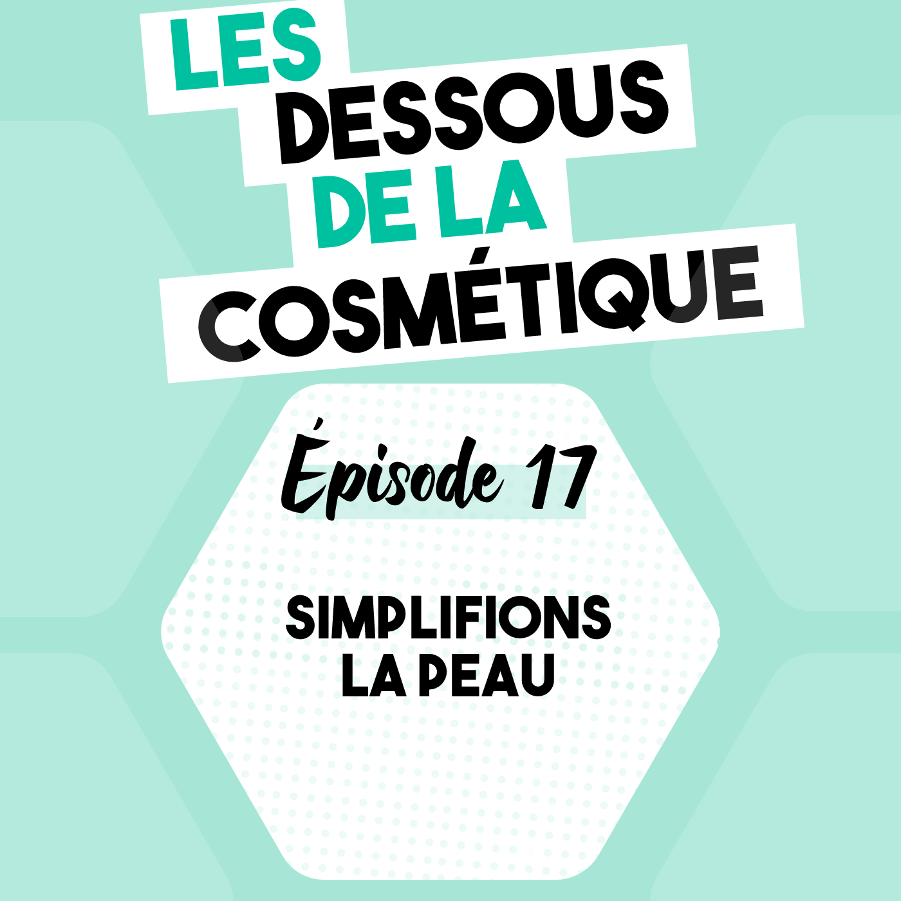
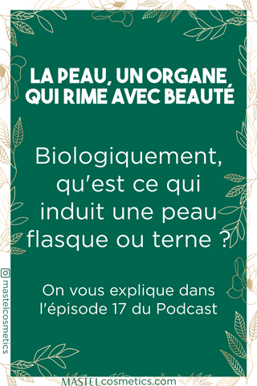

Podcast : Épisode 17, simplifions la peau

Épisode audio, comment choisir ses cosmétiques ?
- Disponible sur : Épisode 17 : Simplifions la peau
Résumé
On utilise des cosmétiques et plus particulièrement des soins pour prendre soin de notre peau. Mais savez-vous vraiment ce qu'est votre peau ?
Qu'est-ce que la peau ?
- c'est un organe à la surface de notre peau
- elle fait barrière aux virus, bactéries, pathogènes et évite qu'ils rentrent dans notre corps
- elle se compose de trois couches :
- L'épiderme, la couche la plus superficielle, pour l'éclat du teint
- Le derme pour l'élasticité et la résistance de la peau
- Les cellules graisseuses pour amortir les chocs et réguler la temperature du corps
Comment en prendre soin au quotidien ?
- Un nettoyage doux
- Une bonne hydratation
- Une protection antioxydante
Pour en savoir plus sur la peau, aller voir l'épisode 9 des Dessous de la Cosmétique.
Notes de l’épisode
- Le site internet : MastelCosmetics
- Le compte Instagram : @mastelcosmetics
- Cet article vous a plu ? 📌 Cliquez sur les images ci dessous pour les épingler sur Pinterest et les retrouver plus tard !
 |
Transcription
Bonjour, vous écoutez l'épisode 17 des Dessous de la Cosmétique, le Podcast qui vous dévoile et vous explique avec clarté et sincérité le monde de la cosmétique. Je suis Julie Magand Castel, biologiste, chimiste et cosmétologue spécialisée en cosmétique naturelle et aujourd'hui nous commençons un nouveau format d'épisode, plus court et plus simple sur des notions de cosmétique, de biologie ou de bonne pratique industrielle. Le premier épisode va porter sur la peau car c'est important de comprendre son fonctionnement pour choisir ses cosmétiques. L'épisode # 9 était la version longue et plus détaillée si vous vous sentez d'attaque pour rentrer dans les détails.
La peau, c'est un organe qui est à la surface de notre corps. Elle est en relation directe avec les autres organes et elle échange d'ailleurs des flux via le système sanguin. Comme la peau est en contact direct avec notre environnement, une de ses raisons d'être ça va être de limiter l'accès aux virus, aux bactéries et tous autres corps extérieurs et étrangers qui pourraient nous rendre malades. Notre peau, c'est un peu le vigile ultra restrictif d'une boite de nuit super cotée.
Elle va aussi servir à protéger des coups, des chocs, des changements de pressions et ça notamment grâce aux cellules graisseuses, car oui notre graisse fait partie de notre peau d'un point de vue biologie. Les cellules graisseuses sont aussi là pour réguler la température de notre corps. C'est notre sorte d'isolant, de laine de verre à nous.
En sachant cela, vous vous imaginez bien que l'épaisseur de la peau va différer d'un endroit à l'autre sur notre corps. Elle va être beaucoup fine au niveau des paupières par exemple et beaucoup plus épaisse au niveau de notre fessier. Ces cellules grasses, c'est la partie la plus profonde de la peau, celle qui est le plus vers l'intérieur de votre corps. Mais je suis certaine qui vous vous en serez douté, car quand on se coupe, on saigne bien avant de voir le gras de notre peau, donc ça veut bien dire qu'il y a une couche plus superficielle qui est vascularisée, qui contient des vaisseaux sanguins.
En fait, pour être tout à fait clair, la peau est divisée en trois couches, la plus profonde est celle qui contient les cellules grasses et aussi des vaisseaux sanguin. Mais, il y a aussi la couche du milieux, que l'on appelle de derme. C'est facile à retenir, c'est l'origine du mot dermatologie. Sans surprise, le derme contient lui aussi des vaisseaux sanguins et c'est lui qui est responsable de l'élasticité de la peau et de sa résistance entre autres. Vous avez sans doute déjà entendu parler du collagène dans des pubs de cosmétique justement. Et bien le collagène, c'est une protéine qui se trouve dans le derme donc dans la couche du milieu de la peau et qui lui donne ses capacités de résistance. On en entend beaucoup parler, car sa quantité diminue en vieillissant, ce qui provoque une peau plus flasque. C'est pourquoi de nombreux cosmétique cible son processus de fabrication dans la peau pour stimuler sa production ou alors pour éviter sa dégradation, enfin peu importe la stratégie le but, c'est de maximiser la quantité de collagène pour obtenir une peau plus ferme. Le derme, c'est une couche qui a beaucoup d'activité et dont on s'occupe beaucoup en cosmétique. Au-dessus du derme, il y a la couche de la peau qui est directement en contact avec l'extérieur. Cette couche n'est pas vascularisée, elle n'a pas de vaisseaux sanguins, mais elle joue un rôle important sur l'éclat de votre teint. Elle contient des cellules vivantes et des cellules mortes. Les cellules mortes s'acculent à la surface de la peau et s'éliminent petit à petit, toutes seules. Ou on peut les aider à s'éliminer à l'aide de cosmétique qui exfolie la peau, ce qui va aider à avoir un teint plus éclatant.
Pour conclure, notre peau est un organe qui se décompose en trois couches. La couche la plus superficielle va jouer sur l'éclat du teint, la couche du milieu, le derme va jouer sur l'élasticité et la résistance entre autre, et la couche la plus profonde est la couche graisseuse qui sert à amortir les chocs et réguler la temperature du corps.
J'espère que cet épisode simplifié vous a plu et a aidé à comprendre globalement ce qu'était la peau. Vous pouvez retrouver les notes de cet épisode sur mastel.fr donc mastelcosmetics.com, dans la rubrique les Dessous de la Cosmétique. Si vous appréciez ce contenu, vous apprécierez sans aucun doute notre compte Instagram @mastelcosmetics et si vous voulez nous donner un coup de pouce, vous pouvez laisser un avis 5 étoiles sur Apple Podcast. Merci de votre soutien, prenez soin de vous et à bientôt !